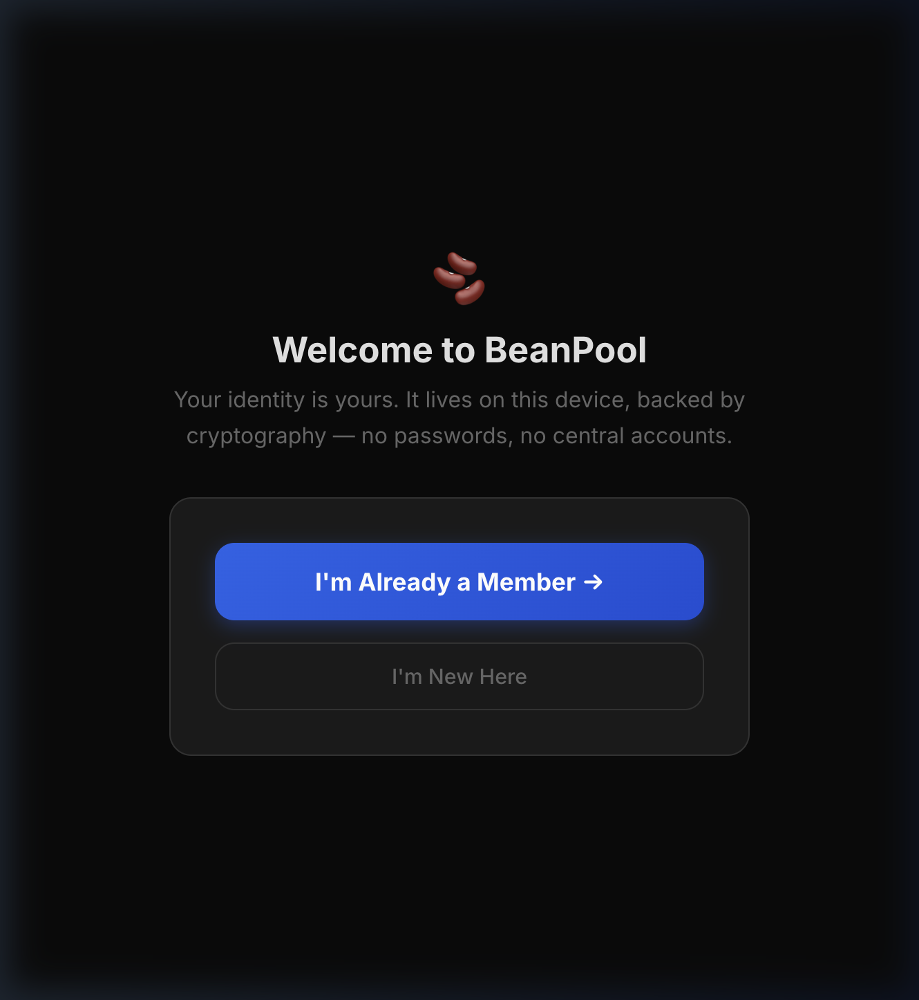
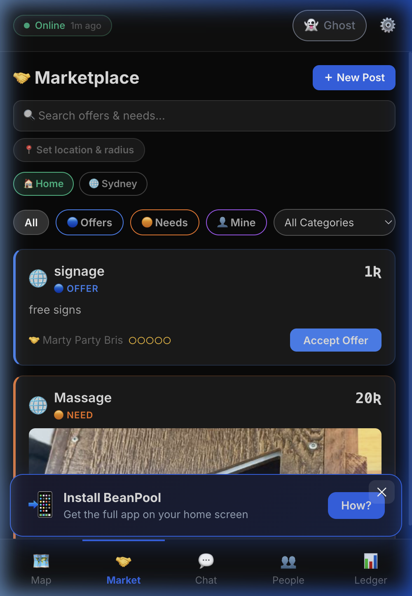

BeanPool is a local exchange platform with a stunning native mobile application that lets neighborhoods trade services and share resources — peer-to-peer, no middlemen, no fees.
Discover sovereign communities running BeanPool connecting people near you.
A community exchange where everyone starts at zero. Value flows from real services exchanged between real people — no money changes hands.
Deploy a BeanPool node for your neighborhood, town, or community. It runs on any server — even a Raspberry Pi.
Members join through a web-of-trust invitation tree. Each person is vouched for by someone already in the network.
Post what you need or offer on the marketplace. When services are exchanged, your balance adjusts — positive for providers, negative for receivers.
Demurrage (a tiny daily fee on idle balances) flows into a Community Commons pool. Members vote to fund local projects.
A beautifully designed, sovereign native application for iOS and Android that maps your local neighborhood.


Not a blockchain. Not a startup. A platform owned by the communities that run it.
No money changes hands. When you provide a service, your balance goes up. When you receive one, it goes down. The community always balances to zero.
An integrated marketplace with map pins, category tags, and the ability to browse needs and offers from connected nodes.
Membership is managed through an invitation tree — not anonymous sign-ups. This keeps communities accountable and Sybil-resistant.
Protect your private address. Automatically obscure your location at the Regional, Postal Code, or Neighborhood level while remaining mathematically verified.
Demurrage (a small daily tax on idle balances) feeds a commons pool. Members propose and vote on projects to fund.
Provider and receiver ratings build after each transaction, creating trust signals that are visible across the network.
Communicate securely with other members to negotiate trades, share details, and organize community events using end-to-end encryption.
BeanPool runs anywhere Docker runs. Grab the source, set your community name, and invite your first members.
git clone https://github.com/martyinspace/beanpool.git
cp .env.example .env # Set your community name & domain
docker compose up -d